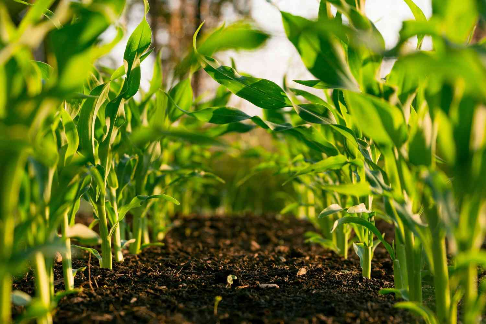
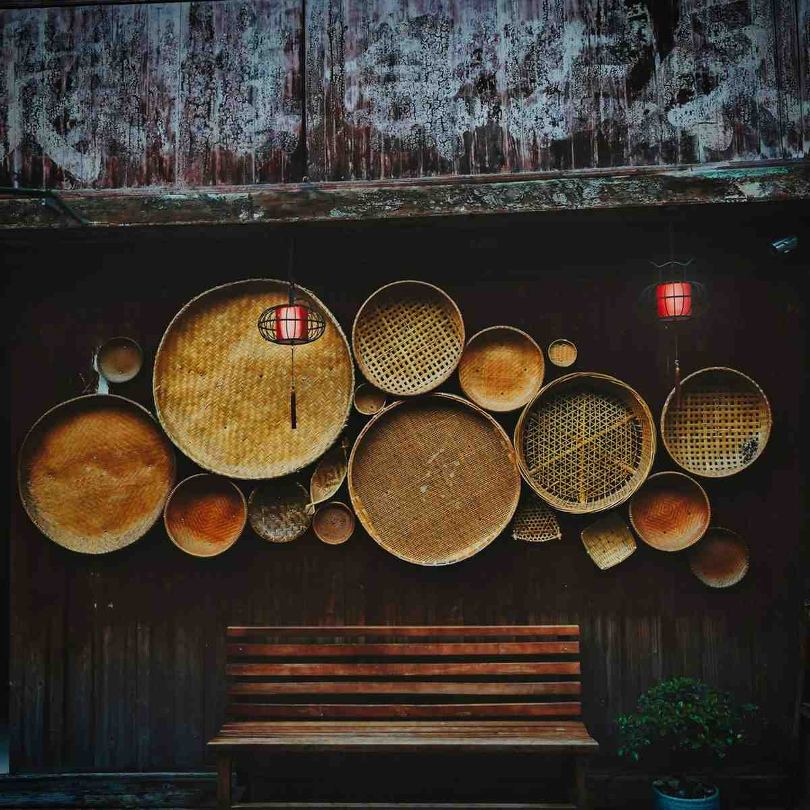
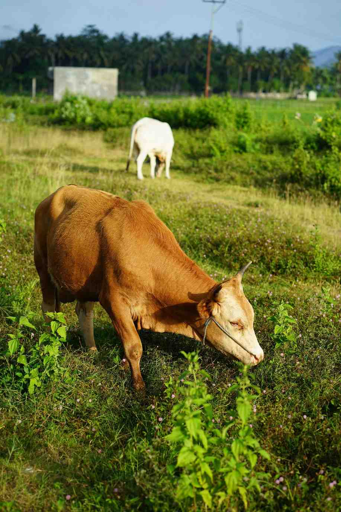
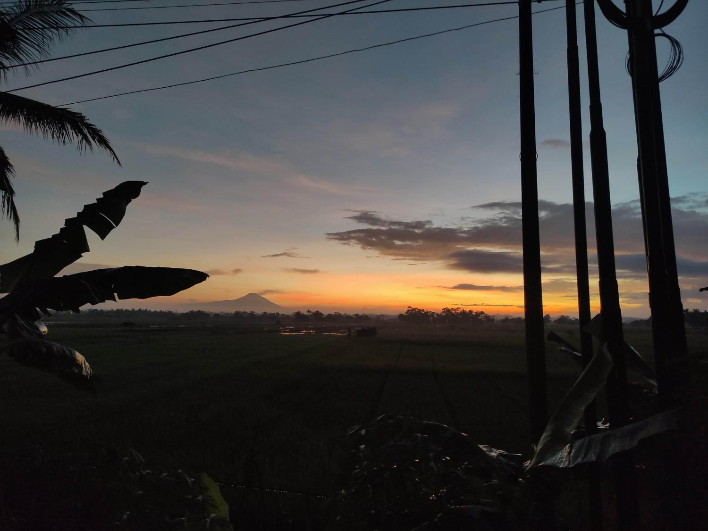
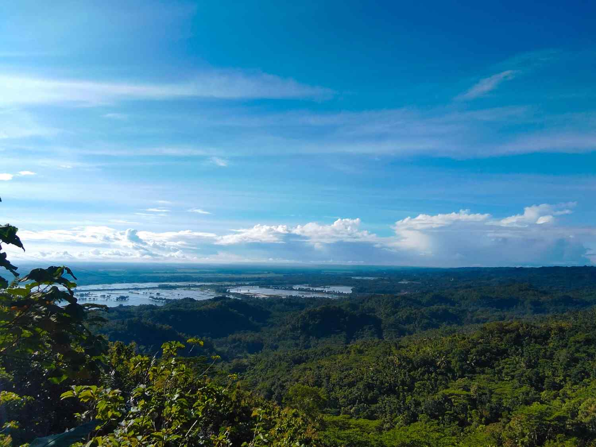

Potensi Desa
Lihat Semua
Pertanian
Padi, Palawija, Hortikultura

UMKM
Produk Lokal Unggulan

Peternakan
Sapi, Kambing, Unggas

Lingkungan
Alam Asri & Terjaga
Penduduk
Data tahun 2024Mata Pencaharian
Sektor PertanianDusun
20 RT / 3 RWLuas Wilayah
Desa CiganjengDesa Ciganjeng merupakan salah satu desa di Kecamatan Padaherang, Kabupaten Pangandaran, Provinsi Jawa Barat. Desa kami memiliki potensi besar di sektor pertanian, UMKM, serta sumber daya alam yang melimpah.
Kami berkomitmen untuk terus membangun desa yang lebih maju, mandiri, dan sejahtera bersama seluruh masyarakat.
Selengkapnya

Padi, Palawija, Hortikultura

Produk Lokal Unggulan

Sapi, Kambing, Unggas

Alam Asri & Terjaga
Kegiatan dan suasana Desa Ciganjeng
Jl. Raya Pangandaran No. 833, Padaherang, Pangandaran, Jawa Barat